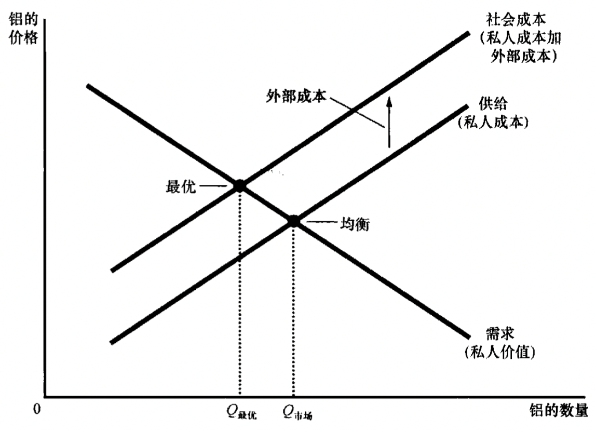
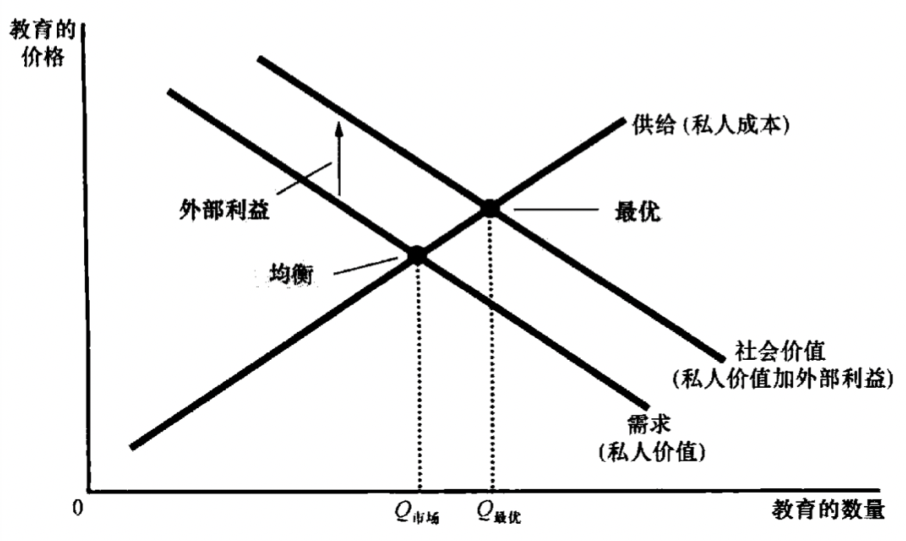

正外部性与负外部性
经济学十大原理中有一个是市场通常是一种组织经济活动的好方法的基础，市场是可以把很多事情做好，但不是每一件事，比如当外部性出现的时候，可能就会出现市场失灵。
当一个人从事一种影响旁观者福利并对这种影响既不付报酬又不得报酬的活动时，就产生了外部性。如果对旁观者的影响是不利的则为负外部性，反之，如果这种影响是有利的则为正外部性。
比如，汽车尾气带来环境污染有负外部性，修复历史建筑能让人感受历史沧桑感有正外部性，狂吠的狗带来噪音干扰具有负外部性，新技术研究带来社会进步具有正外部性。
外部性和市场效率
负外部性
外部性会引起市场资源的配置无效率。以生产铝为例，生产铝的社会成本要大于铝生产者的成本，因为每生产一单位的铝，社会成本是生产者的私人成本和受到污染的不利影响的旁观者的成本，即最优供给曲线会上移，最优数量会小于市场的均衡数量，如下图所示。

将铝的生产量和消费量降到均衡水平以下，就会增加社会的总经济福利。
那么社会计划者如何从市场均衡调整到最优结果呢，通常的方法是对生产者征收税收，使得供给曲线自动上移到达最优供给曲线。这种税收的作用叫外部性内在化。
正外部性
有的生产活动会为第三方带来成本，有的生产活动会为第三方带来利益。以教育为例，就个人而言，受教育的人能成为生产效率更高的人，从而获得更高的工资；对政治而言，受教育的人能成为更理智的选民；对社会而言，受教育的人有更低的犯罪率，另外还能促进技术进步的开发和扩散。
由于社会价值大于私人价值，因此社会价值曲线会在市场需求曲线之上，如下图所示。

社会价值最优的均衡量大于市场本身的均衡量，政府也可以通过使市场参与者把外部性内在化来应对这种市场失灵，常用的方法是对正外部性进行补贴。
正外部性可以产生大量的技术溢出，一个企业的技术进步能推动很多人生活水平的提高，所以政府需要鼓励那些产生了大量溢出效应的行业和企业，比如对研发支出进行税收减免，或对核心技术进行专利保护等。
针对外部性的公共政策
管制策略
政府可以通过规定和禁止某些行为来解决外部性，比如政府可以禁止一些污染排放，但是多数情况下产生污染的是多方，要禁止所有污染是不可能的。而且制定相关的禁止条例需要了解某些特定行业以及这些行业使用技术的详细信息，而政府管制者很难拿到这些信息。
矫正税和补贴
政府除了强制管制，还可以借助市场的力量进行干预，比如前面所说的税收和补贴。用于纠正负外部性影响的税收也被称为矫正税。虽然管制和矫正税都能减少污染，但是税收在实现这个目标上会更有效率。本质上，矫正税规定了污染的价格，它把污染权分配给那些减少污染成本最高的工厂，而且管制策略不能激发工厂持续降低污染的动力，当污染量低于管制的数量后，工厂就不会再减少排污。相反，税收可以激励工厂去开发更加环保的技术。
大多数税收都是扭曲了激励，降低市场效率，减少社会福利，但矫正税不同，矫正税既增加了政府的收入，又提高了经济效率。
可交易的污染许可证
从经济效率看，允许污染许可证交易是可行的。例如现在有钢铁厂和造纸厂，都在产生污染，但是单位污染对应的生产量是不同的，当需要降低一定量的污染时，允许两个工厂之间进行污染许可证交易可以使得双方的状况都变好，而且这种交易没有任何的外部影响，因为污染总量是相同的。
虽然使用污染许可证减少污染和矫正税看起来非常不同，但是很多地方是互通的。这两种情况下企业都需要为污染付费，在使用矫正税时，企业需要向政府交税，政府再分配给生产污染较少的企业，在使用污染许可证时，污染企业必须购买污染许可证，这也是政府印发的。
从某种情况来说，出售污染许可证可能比实行矫正税更好，它避免对污染状况直接定价，而通过工厂之间的相对优势来持续降低污染量。
外部性的私人解决方案
私人解决方法的类型
主要有四种方式
- 将外部性内在化：考虑到自己的行为会对别人造成何种影响，也就是所说的“己所不欲，勿施于人”。
- 慈善行为：政府通过允许计算所得税时扣除慈善捐赠的税制来鼓励这种行为。
- 通过依靠各方的利己来解决：比如有一个果农和蜂农，本来各自对于对方而言都是正外部性，但当两者都不考虑正外部性时，可能会出现果农少种树，蜂农少养蜂的情况，如果果农向蜂农购买蜂蜜，蜂农向果农购买水果，这就会增加这种正外部性。这种多方的利己形式也是很多企业进行多种类型经营的原因之一。
- 利益各方签订合约：合约作为一种强制约束来保证双方的无效率。
科斯定理
科斯定理说明，私人经济主体可以解决他们之间的外部性问题，无论最初的权利如何分配，有关各方总可以达成一种协议，在这种协议中，每个人的状况都可以变得更好，结果是有效率的。就像前面的果农和蜂农之间，只要双方产生交易，就可以出现正外部性，使得市场便得有效率，同样负外部性也可类似解决。
私人解决方案并不总是有效
有时利益双方并不能很好的解决外部性问题，主要原因是交易成本。比如果农和蜂农之间交易需要起草和执行合约所需要律师费用等。另外，当利益各方人数众多时，达成有效率的协议就会变得非常困难。比如一个工厂像河流里排污，影响力渔民捕猎，那渔民可以向工厂支付，以使其放弃排污，但是如果有很多渔民，要协调所有的人来与工厂协商就几乎是不可能的。
完～